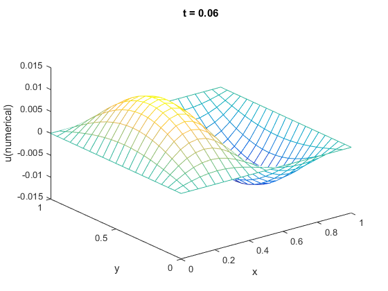
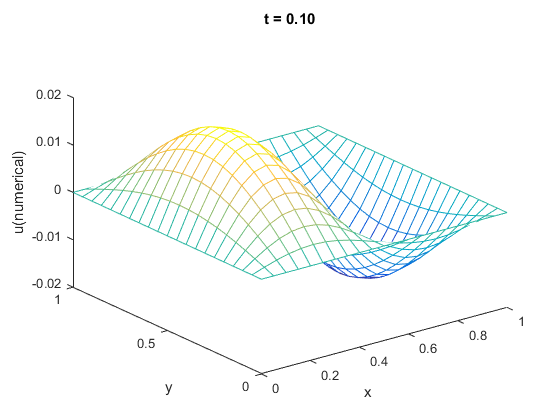
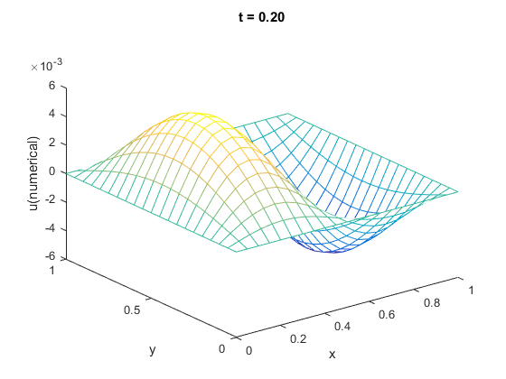
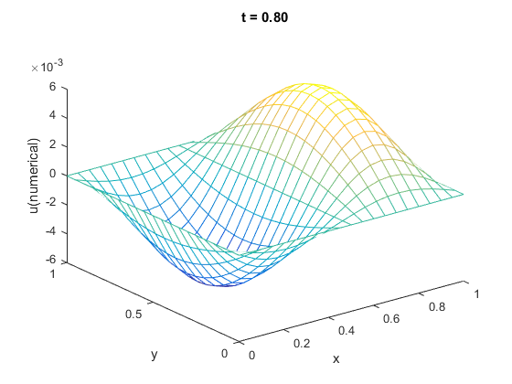

HW 4.4.10
Contents
Initial-boundary-value Problem
Numerical Solution(Correct Scheme)
ts = [0.06, 0.1, 0.2, 0.4, 0.8];
dx = 0.05; dy = 0.05; dt = 0.01;
[u, X, Y] = solver_4_4_10(dx, dy, dt);
plotSlice_4_4_3(ts, dt, u, X, Y);
   
Code: Solver of Functionn
function [u, X_, Y_] = solver_4_4_10( dx, dy, dt )
f_ = @(X, Y, t)(sin(2 * pi * X) .* sin(pi * Y) .* sin(5 * pi * t));
nu = 1;
X = round(1 / dx);
Y = round(1 / dy);
T = round(1 / dt);
x = 1; y = 1; t = 1;
Mx = x * X; My = y * Y; N = t * T; hrx = nu * dt / dx / dx / 2;
hry = nu * dt / dy / dy / 2; x_ = 0 : dx : x;
y_ = 0 : dy : y;
t_ = 0 : dt : t;
[X_, Y_] = meshgrid(x_, y_);
u = zeros([size(X_), N + 1]); u_t = zeros(size(u(2 : end - 1, 2 : end - 1, 1)));
u_h = zeros(size(u_t)); x__ = x_(2 : end - 1); y__ = y_(2 : end - 1);
[X__, Y__] = meshgrid(x__, y__); A_0 = hry * speye(length(y__));
A_1 = hry * ones(1, length(y__) - 1);
A = -2 * A_0 + sparse(diag(A_1, 1)) + sparse(diag(A_1, -1)); B_0 = hrx * speye(length(x__));
B_1 = hrx * ones(1, length(x__) - 1);
B = -2 * B_0 + sparse(diag(B_1, 1)) + sparse(diag(B_1, -1)); coef_Ix = speye(length(x__));
coef_Iy = speye(length(y__)); coef_prdx2 = coef_Ix + B;
coef_mrdx2 = coef_Ix - B;
coef_prdy2 = coef_Iy + A;
coef_mrdy2 = coef_Iy - A;
coef_inv_mrdx2 = inv(coef_mrdx2);
coef_inv_mrdx2_times_prdx2 = coef_inv_mrdx2 * coef_prdx2; for kk = 1 : N
u__ = u(:, :, kk);
u_ = u__(2 : end - 1, 2 : end - 1);
F_ = dt / 2 * f_(X__, Y__, t_(kk));
F__ = dt / 2 * f_(X__, Y__, t_(kk + 1));
coef_Right_Hand = (coef_prdy2 * u_ + F_) * coef_inv_mrdx2_times_prdx2;
u_t = mldivide(coef_mrdy2, coef_Right_Hand + F__);
u(2 : end - 1, 2 : end - 1, kk + 1) = u_t;
end
endCode: Value of Slices
function plotSlice_4_4_3( t_slices, dt, u, X_, Y_ )
t_slices_id = round(t_slices / dt) + 1;
for ii = 1 : length(t_slices)
figure; hold on;
title(sprintf('t = %.2f', t_slices(ii)));
mesh(X_, Y_, u(:, :, t_slices_id(ii)));
view(3); xlabel('x'); ylabel('y'); zlabel('u(numerical)');
end
end